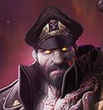

Catalin N.

Summary
Hi, I'm Catalin. I'm a programmer with a passion for creating efficient code.
My goal is to create user-friendly websites that are visually appealing and easy to navigate.
Education
-
License Diploma - "Valahia" University (2005 - 2009)
-
Faculty: Electrical Engineering
-
Domain: System Engineering
- Department: Automatic Control and Applied Informatics
Work experience
-
IT Specialist - BlomInfo.
May 2009 - June 2011
- plugins development for GIS (Geographic Information System) software, Strumap.
- developing of applications in python 2.7.
- setup and maintenance of Strumap environment.
- maintenance of working stations inside of department.
-
Engineer - GeoSting.
April 2015 - August 2015
- Team coordinator.
- Data management.
-
Web Application Programmer - InfoDesign.
May 2016 - October 2018
- programming in JavaScript / Sencha ExtJS for GIS web application - AGS3x.
- display and data handling using JavaScript / OpenLayers 3.
- plugins development for Quantum GIS using python 2.7 and Qt framework.
- working with databases like PostGIS / PostGRES inside Quantum GIS environment.
- GeoServer configuration.
- porting JavaScript / Sencha ExtJS applications on iOS with Apache Cordova.
- web applications development with JavaScript - JQuerry / jQuerry UI.
Skills
-
Hard skills:
- Computer skills
- Machine learning
- Python programming language
- Java programming language
- JavaScript programming language
- HTML
-
Soft skills:
- Research
- Problem-solving
- Adaptability
- Creativity
- Attention to detail
- Organizational skills
Awards and Certifications
- Certificate of Course Completion - Fundamentals of Java Programming - InfoAcademy.
Other